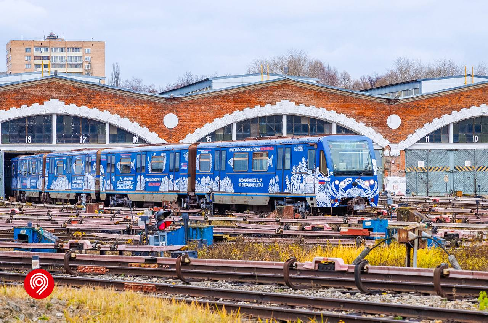
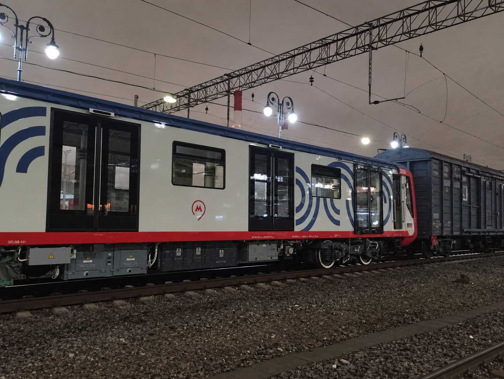
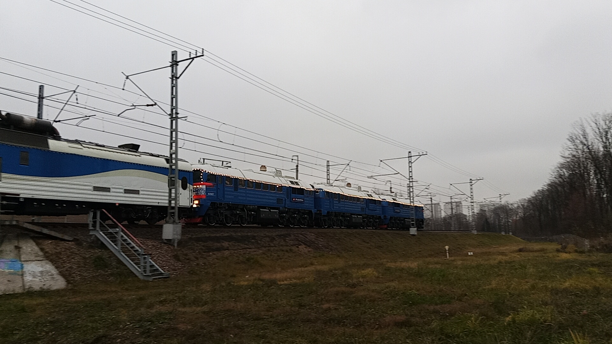
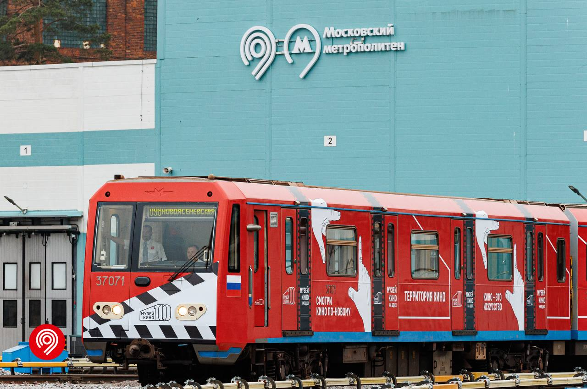
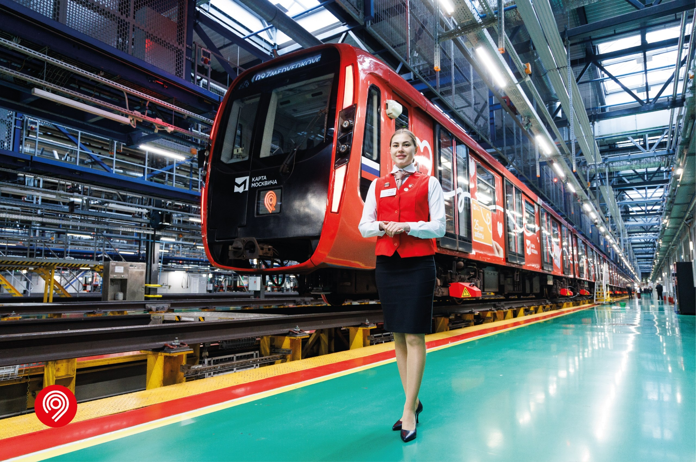
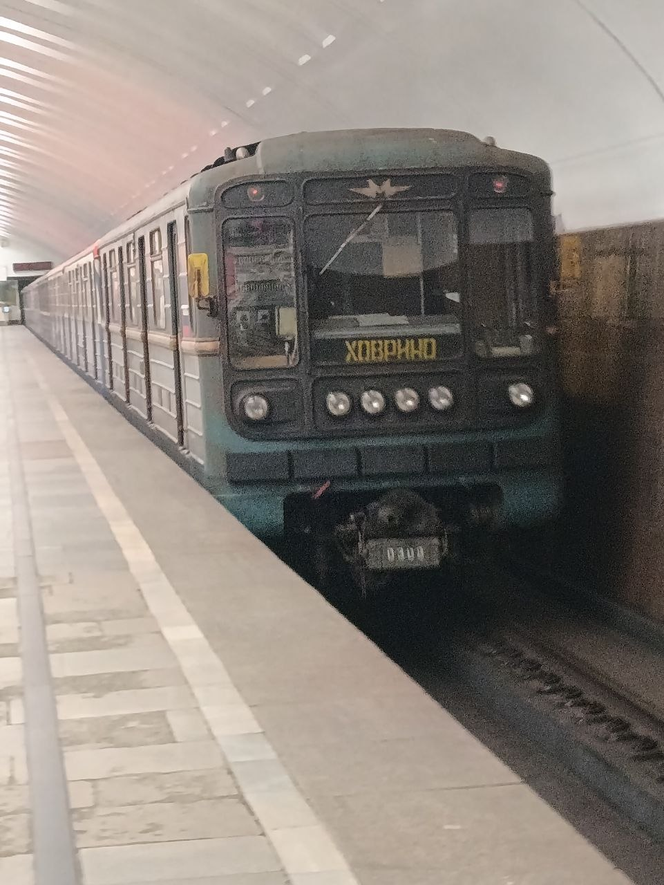

Лента новостей

Море интересного — в одном поезде!
На Арбатско-Покровскую линию вышел новый тематический состав. Его посвятили проекту «Москва — на волне». 📸 Дептранс Москвы
Читать подробнее →
Искусство в движении
Посвятили проекту «Искусство в метро» новый тематический поезд. Он будет курсировать на Арбатско-Покровской линии.
Читать подробнее →
На Замоскворецкой линии вышел поезд к 185-летию Сбербанка
Новый тематический состав на базе «Москва-2026». Это второй поезд в истории метро, посвящённый банковской сфере. 📸 Пресс-служба Московского метрополитена
Читать подробнее →
В Москву прибыл первый состав «Москва-2026» с прислонно-раздвижными дверями
Состав с головным вагоном №75529 замечен на Киевском вокзале. Это возвращение к дверям старого типа, которые были у вагонов серии 81-765. 📸 PDMicail
Читать подробнее →
«Поезд Деда Мороза» готовится к зимнему путешествию
Сегодня на Киевском направлении прошла обкатка праздничного состава до Калуги и обратно. Кстати, именно сегодня в столице пошел первый снег. 📸 pfandrom
Читать подробнее →
«Ока» с тематикой Музея кино на Калужско-Рижской линии
На КРЛ вышел поезд, посвящённый Музею кино на ВДНХ. Оформлен на базе модели 81-760/761 «Ока». 📸 Дептранс Москвы
Читать подробнее →
Запуск тематического поезда «Карте Москвича — 25 лет!»
На Калужско-Рижскую линию вышел новый тематический состав, посвящённый 25-летию социальной карты москвича. Поезд оформлен на базе модели «Москва 2020» (81-775). 📸 Дептранс Москвы
Читать подробнее →
Презентация состава «Золотая черепаха»
Был презентован новый тематический состав «Золотая черепаха» на базе поезда «Москва-2017». 📸 pfandrom
Читать подробнее →
Поезд к 150-летию Союза театральных деятелей
Запущен тематический поезд, посвящённый 150-летию Союза театральных деятелей РФ. 📸 ГУП «Московский метрополитен»
Читать подробнее →
Уникальные трафареты в «Номерном»
Вышли в рейс вагоны с уникальными трафаретами: чёрный фон и жёлтые буквы. 📸 pfandrom
Читать подробнее →
Состав к 20-летию «Технополис Москва»
Запускаем новый тематический состав к 20-летию особой экономической зоны «Технополис Москва». 📸 ГУП «Московский метрополитен»
Читать подробнее →